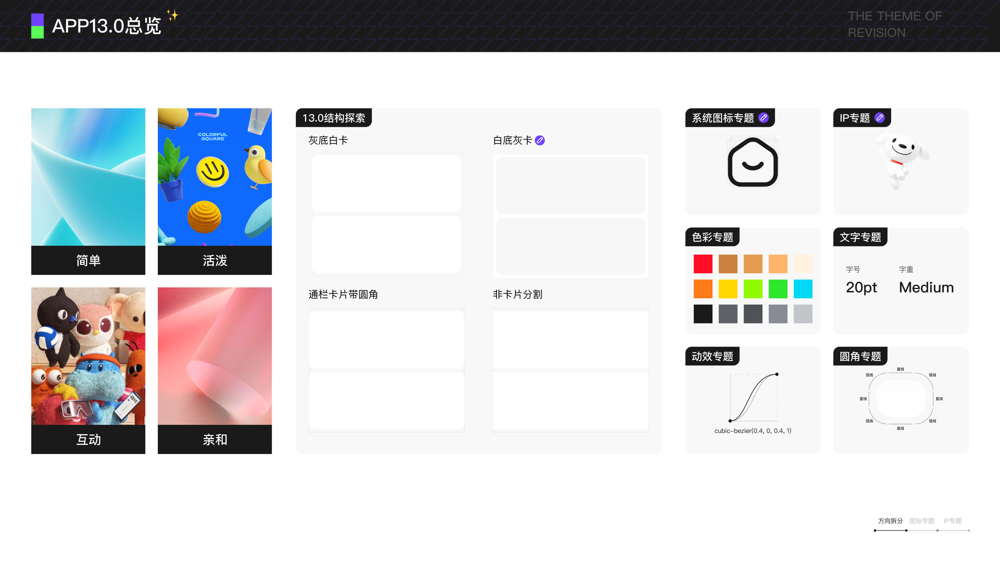
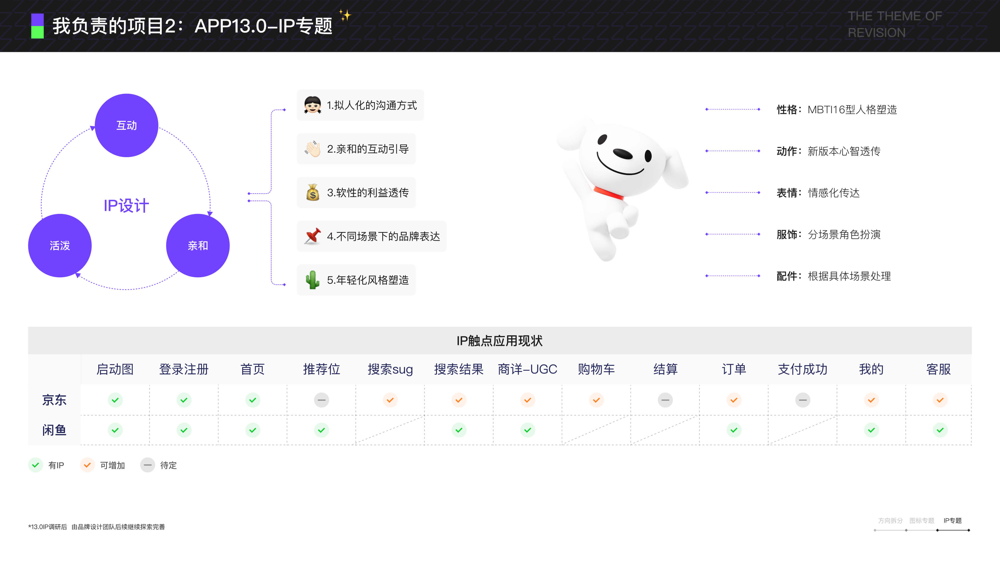
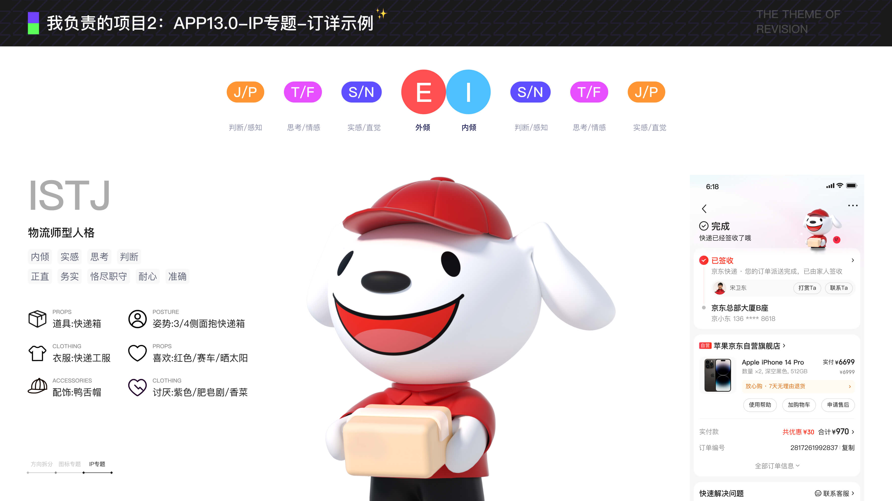

京东APP 13.0
NO.1
项目概览
名称：京东APP 13.0视觉改版
时间周期：2023-2024
项目类型：APP年度改版
我的角色：主视觉设计师之一，本次项目项目拆分为结构、图标、IP、色彩、字体、动效、圆角等多个专题，由多位设计师分工推进。

NO.2
问题与目标
核心问题：京东APP经历多个版本迭代后，页面视觉表达、图标语义、IP触点和基础样式存在一定割裂，需要在复杂业务中重新建立更统一的视觉秩序。
设计目标：在年度改版中拆解结构、图标、IP、色彩、字体、动效、圆角等专题，探索更年轻、更清晰，也更适合后续版本延展的视觉方向。
NO.3
我负责的内容
系统图标：围绕语意、语构、语境和语用四个维度重塑图标表达，优化图标在不同业务场景中的识别效率和一致性。
IP专题：梳理京东IP在站内关键链路中的触点，探索更亲和、更轻量的沟通方式，并输出订单等场景的应用示例。
白底灰卡探索：针对首页、购物车、订单、商详等页面场景，探索结构、色彩、文字、标签和圆角等基础规范。




NO.4
结果与复盘
图标探索的部分直接为15.0icon改版做了铺垫。
而IP应用的部分梳理了站内主流程场景，对于问题也有明确的分析，后续设计已移交深圳品牌设计部。
虽然 13.0 未以完整版本正式上线，但相关探索为后续 15.0 的视觉升级提供了重要铺垫，包括视觉方向判断、基础规范沉淀和部分体验细节验证。